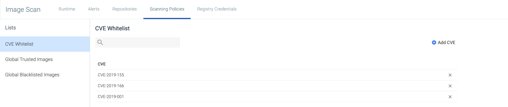
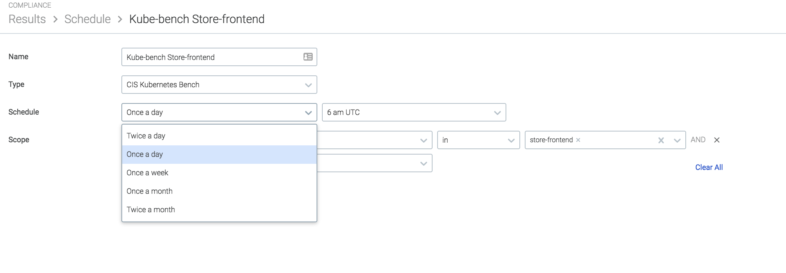
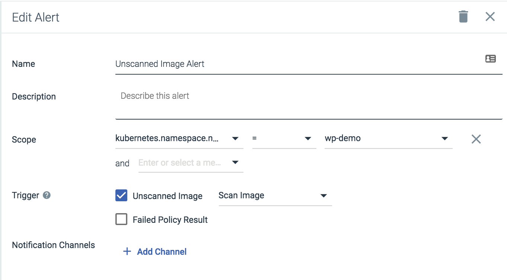
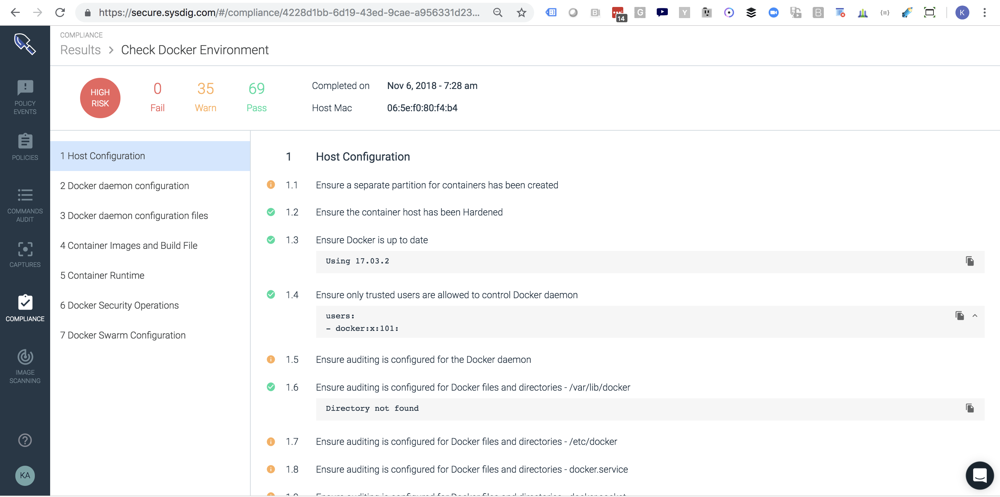
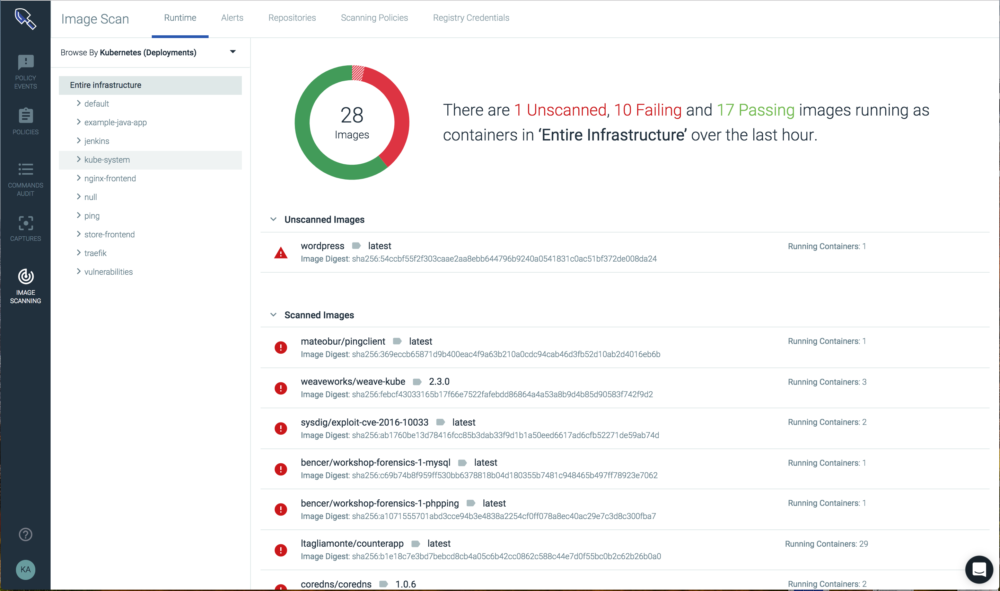
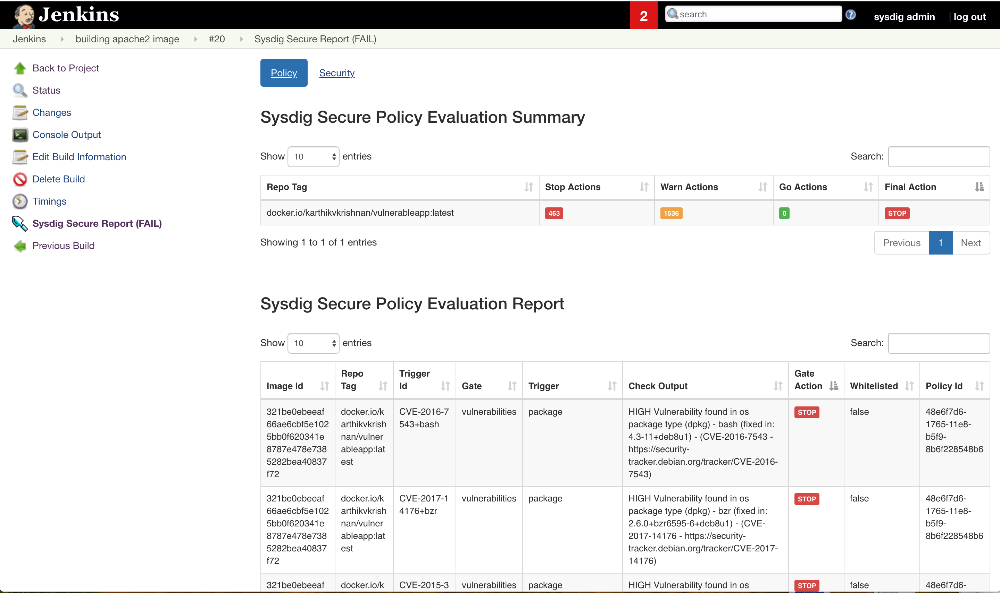
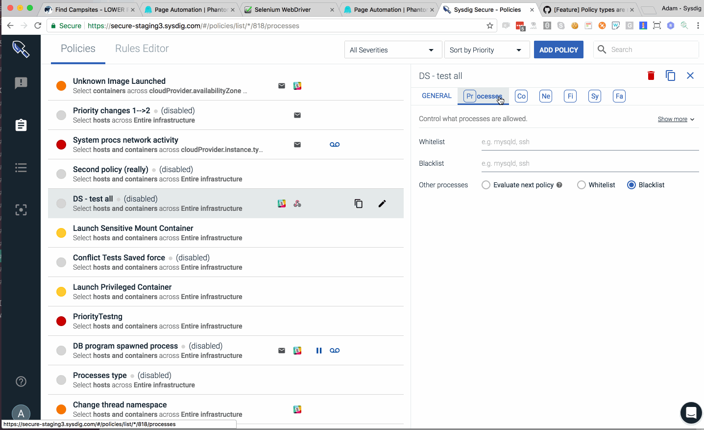
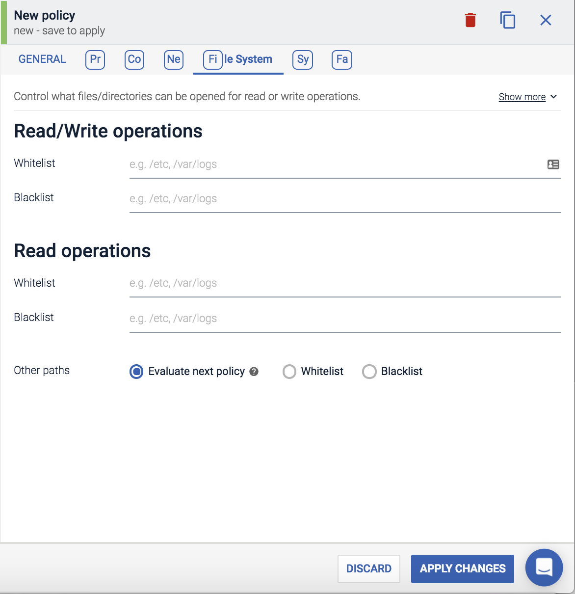
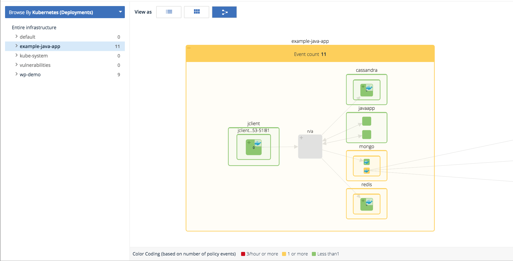
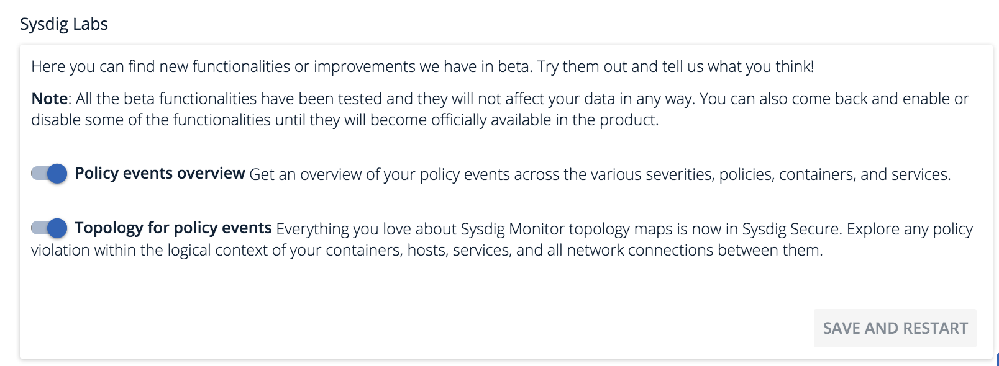

SaaS: Sysdig Secure Release Notes
Aug 12, 2019
Policy Editor
*Please upgrade to an agent version 0.92.0 or greater
This UX overhaul brings three major improvements for every Sysdig Secure user:
Runtime policies can import any number of security rules. You can scope the security policy using container, cloud and Kubernetes metadata.
Tighter Falco integration, directly from the web UI. You will be able to define a new trigger condition or append to the list of forbidden external IPs just clicking on the rule.
A more structured way to group, classify and lookup rules, following the standard Cloud native procedure: tags and labels.
Rules Library
Visualize your runtime rules properties in just a glance:
Where this rule comes from (Published By). The security team can instantly recognize whether a rule came from a specific Sysdig update, from a custom rules file created within the organization or from an external rules source (like the Falco community rules).
When was the last time it was updated (Last Updated). You can use this information to audit your rules or if you schedule periodic updates, to confirm when last happened.
Rule tags: An effective method for organizing your rules. You can use these tags to describe the targeted entity (host, k8s, process), the compliance standard it belongs to (MITRE, PCI, CIS Kubernetes) or any other criteria you want to use to annotate your rules.
 |
Falco Lists
Easily browse, append, and re-use lists to create new rules. Lists can also be updated directly via API if users want to add existing feeds of malicious domains, or IPs.
 |
Falco Macros
Easily browse, append, and re-use macros to create new rules.
 |
Image Scanning Reports
Please contact Sysdig Support to enable this feature
Summary - The reports feature allows users to query the contents of a scan against a static or run-time scope to generate a report that shows the risk, exposure, or components of an image.
Use cases could include:
A new CVE has been announced, let me find all the running images in my US East Cluster that are exposed to that CVE
Show me all images within my Google Container registry that have the tag prod and have a vulnerability with a fix that's more than 30 days old
Show me all images with a high severity vulnerability with a fix that are running in my billing namespace
Vulnerability Query Type
 |
This report returns rows of vulnerabilities mapped to packages within images in a static or run-time scope. In the example above we can see the two images that are actively running in my environment now that have the CVE - CVE-2017-8831
Package Query Type
|
This report shows all images actively running in my environment that have a version of the bash package. It also shows if multiple images are running the same package name & version and if there are any CVE's associated.
Policy Reports
|
Policy reports show all the policy evaluations that have occured, whether or not they passed or failed, and the reason why an image may have passed or failed. Reasons for passing or failing could be because of, whitelists, blacklists, or just a standard policy evaluation.
Image Scanning - View Scan Results
Scan Results Page - The existing repositories page has been renamed "Scan Results" this page also includes new capabilities to filter based on where the images are deployed, and to easily browse/expand the different repositories to see the image:tag's that were evaluated and their results
 |
Whitelist labels available in vulnerabilities view - If a vulnerability has been added to a whitelist then that status is reflected in the Vulnerability report within the scan results.
 |
July 12, 2019
Minor Improvements
Compliance Dashboards in MonitorLink from Sysdig Secure now defaults to a 90-day view, to give users better visibility into how their posture is changing over time.
Image ScanningNegligible vulnerabilities are now also shown as part of the scan results summary.
June 27, 2019
Image Scanning: New Trigger Options
New Image Analyzed - Send notifications to different channels when images with a particular registry, repo, tag are scanned.
Some users implement these type of alerts for implementing workflows for image promotion, i.e.
"Push an image from staging to prod registry after a webhook is sent that the image was scanned and it passed."
CVE Update - Be notified whenever a vulnerability is added, updated, or removed from an image within a registry.
Repository Alerts
Receive alerts about activity and changes that occur within your registry. See Manage Scanning Alerts.
 |
Slack Notifications
Sample output of a CVE alert:
 |
Sample output of an image-analyzed alert:
 |
June 25, 2019
Image Scanning: Policies - New rule parameter available
A new field: Max days since creation is now available. This allows users to only take Stop or Warn actions if a vulnerability has been in the feed for a certain number of days.
For example: Only stop a build if an image has a high-severity CVE with a fix, and the CVE is more than 30 days old.
|
June 12, 2019
Image Scanning: Policy Assignments - New compliance audits available
Policy assignments now support the ability to add audit policies to provide a second step of validation of container images. Additional audit policies evaluate images against Dockerfile Best Practices, PCI, and NIST 800-190. These Audit policies have "Warn" actions set by default and are intended to validate compliance/audit use cases and not cause CI/CD builds to fail.
|
Image Scanning: Scan Results Redesign
Scan results have been expanded to help users get a better idea about the policy evaluation status and vulnerabilities present in an image. This new version of scan results allows user to
Get a breakdown of the different OS/Non-OS Critical, High, Medium, Low CVEs present in the image
See the different policies the image has been evaluated against
See which specific rules have triggered the most stop/warn actions and identify areas needing attention
 |
A breakdown of the evaluation result has been added to give users a better idea about what has triggered warn/stop actions as part of the evaluation.
In this case we can look at the Dockerfile Best Practice policy to see the image
Has an effective user of root
Doesn't include a Healthcheck
Uses apt-get upgrade as part of a Run instruction
Includes an ADD instruction
 |
The Vulnerabilities section also now supports enhanced sorting and filtering by severity level and whether or not a fix is available.
 |
Image Scanning: PDF Reports
PDF reports, which include a summary of the policy evaluation and all vulnerabilities present in the image, can be downloaded from the console. Click the link below to see an example:
May 8, 2019
Image Scanning: Policy Assignments
Policy assignments allow you to specify where your image scanning policies are applied. A policy assignment can include a Registry, Repository, Tag combination and has full wildcard support for each of those fields.
Policy assignments are evaluated in descending order, so be sure to specify the most important policies first. See Manage Scanning Policies.
Examples
To evaluate all images with a “Prod” tag with your Example Prod Image Policy, use the assignment:
*/*/ProdTo evaluate all images from gcr.io with an Example Google Policy, use the assignment:
gcr.io/*/*
|
Image Scanning: Map Internal Registries (for OpenShift environments)
The recommended way to run an image registry for an OpenShift cluster is to run it locally. The Sysdig agent will detect the internal registry names, but for the Anchore engine to pull and scan the image it needs access to the internal registry itself. There can now set this path in the Registries UI. See Manage Registry Credentials.
|
Compliance: Custom Report Filters
When running CIS benchmark tests, you can filter your view of the results to show only high-priority items or selected controls.
See Understanding Report Filters and Filter Report Results.
|
March 20, 2019
Kubernetes Audit Logging
Sysdig Secure allows users to create Falco security rules based on a stream of Kubernetes audit events, integrating Kubernetes audit logging with the Sysdig Agent. This allows users to track changes made to the cluster, and send alerts where necessary. See Kubernetes Audit Logging for more information.
Global Whitelisting
Sysdig Secure allows users to manage CVEs and images that may impact builds by defining them as globally trusted or blacklisted. See Global Whitelisting for more information.
|  |
February 22, 2019
Improved Registry Credential UI
The user interface for adding registry credentials has been redesigned to improve user experience and add new configuration functionality. For more information, refer to the Configure Registries documentation.
Event Forwarding
Sysdig Secure policy events can now be forwarded to Splunk. This feature is available through Sysdig Labs. For more information, refer to the Event Forwarding documentation.
New Scanning Policies
New scanning policies have been added for compliance use cases, interpreting NIST 800-190 and PCI rules to detect misconfigured images.
Remediation Information
Remediation information has been added to the product to assist users in solving non-passing test results, in order to bring an environment into compliance. For more information, refer to the Remediation Information documentation.
Identify the Kubernetes Master Node
A new label has been added to the Compliance task results page to assist in identifying the Kubernetes master node. For more information, refer to the Identify the Kubernetes Master Node documentation.
Run a Compliance Task Manually
Users can now choose to run a compliance task immediately, rather than scheduling a task for later. For more information, refer to the Run a Benchmark Test Manually documentation.
Jenkins Plugin Available in Jenkins Community
The Sysdig Secure Jenkins plugin is now available via the Jenkins community.
December 21, 2018
New Scanning Policy Editor
Enhanced scanning policies - there are now hundreds of different checks you can apply to an image based on it's dockerfile, regex of file content, vulnerabilities, licenses, etc. Below is a small example of just some of the rules you can create around dockerfiles.
 |
December 21, 2018
Customizable compliance intervals
CIS Compliance benchmarks now support customizable scheduled where users can from a selection of intervals, days, and times for different compliance tasks to execute.
|  |
November 21, 2018
Image Scanning Performance Improvements
New performance improvements have improved the query time by 10-15x for requests to the image scanning database.
November 18, 2018
Automatic Scanning of Running Images
Users can now configure alerts to automatically trigger scans of unscanned running images. See Image Scanning.
|  |
November 6, 2018
CIS Compliance Checks
The ability to schedule CIS compliance tasks for the agent to run on your infrastructure is now available. These tasks will generate metrics which are available in Sysdig Monitor and reports that are available in Sysdig Secure. For more information, refer to the Compliance documentation
|  |
September 26, 2018
Run-time Vulnerability Reporting
Sysdig Secure allows users to see the vulnerability status of their running images, and group them by hosts, service, or any other metadata collected by the Sysdig agent.
|  |
August 20, 2018
Jenkins Plugin
Check out our Jenkins plugin to make it easier to scan images with Sysdig Secure directly within your Jenkins pipelines.
|  |
August 1, 2018
Container Image Scanning
Scan your images for vulnerabilities, misconfiguration, and compliance checks. Sysdig Secure now supports the ability to scan images as part of the CI/CD process, within a private registry, or from public registries like Dockerhub. For more information, refer to the Image Scanning documentation.
 |
April 18, 2018
Enhanced Policy Rules
Enhanced policy rules let you easily whitelist and blacklist processes, container images, files, ports, and more, while still allowing you to cover advanced scenarios with Falco based rules. For more information, refer to the Policies documentation.
Note
Policy Rules support requires a Sysdig agent running at least version 0.78.1.
|  |
April 3, 2018
New UI Design
Our new user interface provides a more modern framework for interacting with the product. Navigation is re-oriented from a top-of-screen menu to an icon-driven left side panel, providing more space for interacting with Sysdig Secure features.
 |
March 22, 2018
Enhanced Policy Rules Available in Labs
Enhanced policy rules let you easily whitelist and blacklist processes, container images, files, ports, and more, while still allowing you to cover advanced scenarios with Falco based rules. For more information, refer to the Policies documentation.
Note
This requires a Sysdig agent running at least version 0.78.1. To provide the best experience, you should have the feature enabled for all users that create or change policies using the new capabilities.
|  |
January 24, 2018
New User Access Control
As part of the broader Sysdig Platform initiative, Sysdig Secure users will now roll up to the Secure Operations team. The Secure Operations team cannot be deleted. Users in the Secure Operations have full visibility to all resources. Users can be independently added to Sysdig Secure and Sysdig Monitor. Teams can be managed here.
December 1, 2017
Generating Manual Sysdig Captures
Sysdig Captures can now be triggered manually within the Sysdig Secure UI. Just scope a specific host or container and generate a capture to do immediate forensic analysis. For more information, refer to the Captures documentation.
 |
November 2, 2017
Topology Overview for Policy Events
Explore policy events via custom topologies based on any grouping on metadata in your environment. Quickly get an overview of your events, and their network dependencies across the various hosts, containers, and services. Turn on topology view to see this in action in your environment.
|  |
November 1, 2017
Summary Dashboard
Want to know how many of your hosts have secure enabled, what policies are activated, or where violations are occurring in both your hosts and your services? Turn on the Summary Dashboard in Sysdig Labs to get an at a glance view of everything you need to know in your environment.
 |
October 31, 2017
Sysdig Labs now available for Sysdig Secure
Sysdig Labs is now available. Here you can find new functionalities or improvements that are currently in beta. Try them out and tell us what you think!
Note
All the beta functionalities have been tested, and will not affect your data in any way. You can also come back and enable/disable some of the functionalities until they become officially available in the product.
|  |